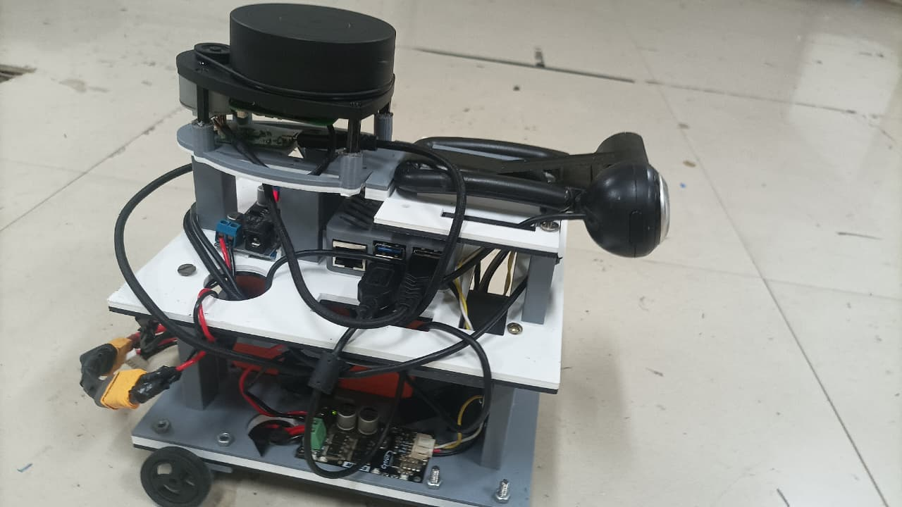
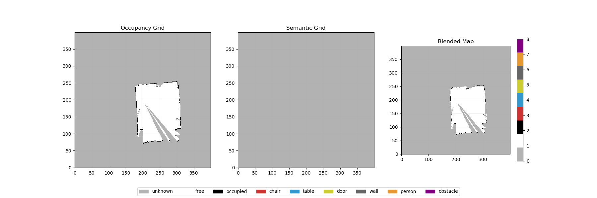
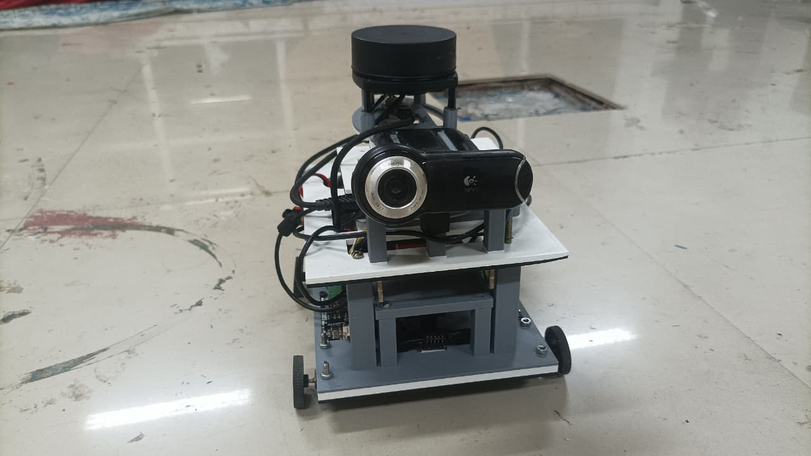
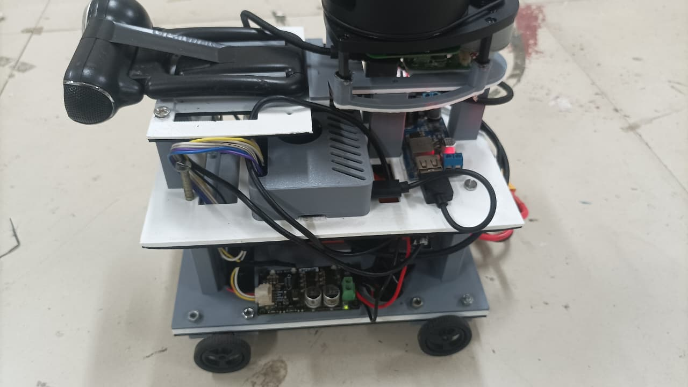
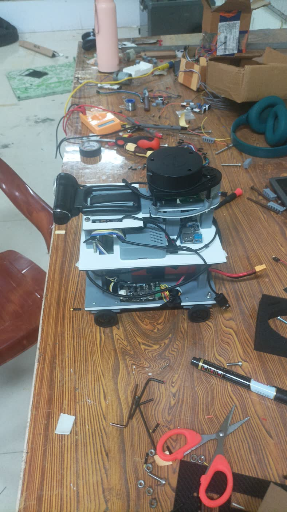

Embodied AI/ ROS 2 Jazzy/ Param Rudra HPC, IIT Patna
R2-D2Redux
A robot that reasons before it moves
Say “go to the table and tell me what is on it.” A vision model reads the camera, a semantic map places the table in metres, a 20B planner writes the route — and Nav2 drives there. No human touches a coordinate.

On camera
The edited film first; below it, unedited test runs — the robot driving to its goal, and the planner that produced it.
The film · 1:47 · with soundparts → architecture → a spoken goal, driven
The signal path
Sense flows up to the GPU node, commands flow back down to the wheels — and the next camera frame is different.
One sentence, traced
“Go to the table and tell me what is on it” — every hop it takes.
The instruction arrives
Typed into the command client, or straight into the planner's own terminal. Anything that isn't a built-in like observe or locate is treated as natural language.
command_client.py → ws :7000The world is described
The planner pulls the robot's current pose, the object list from the semantic map, and a fresh reading of the camera from the vision model. All of it becomes prose in the prompt — positions in metres, objects grouped by type.
GET :8080/map · POST :5000/process_frameMemory is consulted
If a similar instruction has succeeded before, its stored plan is injected into the prompt as a worked example. The robot gets better at the routes it has already driven.
navigation_tasks.sqliteThe plan is generated
GPT-OSS 20B returns reasoning, a list of metric waypoints, and the sentences to speak. The output is parsed defensively — models do not always honour “start with a brace”.
GPT-OSS 20B · 1024 tokensGoals become motion
Each waypoint is POSTed to the laptop, promoted to a PoseStamped with a yaw quaternion, and handed to Nav2. Nav2's controller emits velocity, the ESP32 turns it into PWM, the robot moves — and the camera sees something new.
POST :8888/navigate → navigate_to_pose// the only shape the planner is allowed to emit { "reasoning": "The table is the object at (2.5, 1.3). Approach from the near side, then look.", "navigation": [ { "x": 2.5, "y": 1.3, "description": "Navigate to the table" } ], "speech": [ "I'll go to the table now.", "I've reached the table. I can see several objects on it." ] }
Coordinates are in metres in the map frame, not pixels and not vibes. That constraint is what makes the language model's output executable: everything downstream of this JSON is ordinary, deterministic robotics.
Seeing, and remembering
A language model’s description is useless until it has coordinates attached.
{
"objects": [{
"name": "chair",
"description": "wooden chair, facing left",
"box_2d": [412, 208, 640, 512],
"importance": 4 // 1–5, to a navigator
}],
"scene_inference": "A cluttered lab bench ahead.",
"navigation_advice": "Keep left of the chair."
}
Asking a vision model for a caption gives you a caption. Asking it for a typed record — boxes, a relevance rank, one line of advice — gives you something a planner can act on and a map can index. Identical frames are hashed and cached, because the robot spends a lot of time looking at the same wall.

The map is a 400 × 400 grid holding two layers: geometry from the laser, and one of nine semantic classes — chair, table, door, wall, person, obstacle — projected from whatever the vision model named in the frame the robot was looking at when it scanned. Ask for “the table” and the planner reads a coordinate out of this grid.
Four machines
Split by what each one is physically good for.
ESP32 microcontroller
Runs micro-ROS over serial and nothing else. Subscribes to /cmd_vel, converts linear and angular velocity into two 8-bit PWM channels, and blinks an LED at 10 Hz if the ROS agent ever drops.
Raspberry Pi
Carries the sensors and the network. Runs ROS 2 drivers, slam_toolbox and Nav2 locally, and streams every camera frame, laser scan, IMU sample and transform up to the brain as base64 JSON over a WebSocket.
GPU node
The part that thinks. A 7B vision model and a 20B planner share an A100, alongside the hub that fans sensor data out to them and the semantic map that turns their output into coordinates.
Laptop
Holds an autossh tunnel open to the compute node so the HPC job can be reached at all, and translates the planner's HTTP goals into Nav2 action calls on the robot's ROS 2 graph.
The build
Laser-cut acrylic, three decks, everything reachable.



For the curious
The parts that took the time, every service and port, and how to bring it up.
The hard parts
Matching a slow answer to a fast frame
Vision inference takes seconds; the camera does not wait. Frames go into a dictionary keyed by frame ID under a lock, the vision thread reunites its result with the original frame when it finishes, and the dictionary evicts its oldest entries past a hundred so a stalled GPU can't leak memory forever.
Deciding what to drop
Bounded queues sit in front of both disk and GPU, and each one has an explicit answer for being full: the writer warns and keeps the newest, the vision queue skips the frame. Nothing blocks the WebSocket reader, because a blocked reader means a robot that stops streaming.
Assuming the network will fail
An HPC job behind a login node is not reachable from a robot. autossh forwards six ports to the compute node and rebuilds the tunnel when it dies; vision calls retry three times with a backoff; every socket sets TCP_NODELAY so small control messages don't wait on Nagle.
Trusting a language model exactly as far as you can parse it
The planner is told to emit nothing but JSON, and then treated as if it won't. Responses are scraped for the outermost brace pair, validated field by field, and rejected outright if the coordinates aren't numbers — a bad plan should be a logged failure, not a robot driving into a wall.
Getting better at the same errand
Successful runs — instruction, reasoning, waypoints, speech — are written to SQLite. On a similar instruction the closest match is replayed into the prompt as a worked example, which costs nothing at inference time and sharply steadies the output format.
Being able to see what it thought
Every message is appended to a JSONL log with its type, frame number and timestamp; the hub prints throughput, queue high-water marks and vision error counts every minute. When the robot does something strange, the transcript of what it saw is still on disk.
Service sheet
| Service | Host | Port | Responsibility |
|---|---|---|---|
| Brain hubsrc/r2d2_brain/brain.py | GPU node | 9001–9004 | Terminates the robot's WebSocket, buffers every message to disk on writer threads, samples one frame in five to the vision model, and re-broadcasts enriched frames to the map. |
| Vision modelsrc/r2d2_brain/vlm.py | GPU node | 5000 | Flask endpoint wrapping Qwen2-VL-7B-Instruct. Takes a base64 JPEG, returns objects with boxes and an importance rank, a scene summary, and navigation advice — strictly as JSON. |
| Semantic mapsrc/r2d2_brain/sementic_map.py | GPU node | 8080 | Fuses laser scans into a 400 × 400 occupancy grid and paints vision labels onto it, so “the chair” becomes a coordinate. Serves the map over REST and checkpoints it every minute. |
| Plannersrc/r2d2_brain/gpt_oss.py | GPU node | 7000 | The hinge. Assembles world context, prompts GPT-OSS 20B for a JSON plan, validates it, dispatches goals and speech, and records what worked in SQLite for later reuse. |
| Nav2 bridgesrc/r2d2_comms/…/r2d2_reciever.py | Laptop | 8888 | A Flask server living inside a ROS 2 node. Converts {x, y} into a PoseStamped goal on the navigate_to_pose action, and text into the TTS topic. |
| Sensor bridgesrc/r2d2_comms/…/r2d2_bridge.py | Raspberry Pi | — | Subscribes to every sensor topic on the robot, encodes frames, and keeps the uplink alive with heartbeats and reconnects. |
Bringing it up
# vision first: it loads 7B weights python3 src/r2d2_brain/vlm.py # then the hub the robot dials into python3 src/r2d2_brain/brain.py # the map subscribes to the hub python3 src/r2d2_brain/sementic_map.py # the planner needs all three CUDA_VISIBLE_DEVICES=0 \ python3 src/r2d2_brain/gpt_oss.py
# forward 5000, 8080, 9001-9004 bash start_brain_tunnel.sh # ROS 2 side, serves :8888 ros2 run r2d2_comms r2d2_reciever
# drivers, slam_toolbox, nav2, then
ros2 run r2d2_comms r2d2_bridge
python3 src/command_client.py > what do you see? > find the chair > go to the table and tell me what is on it
Built-ins sit alongside the free-form commands: observe for a fresh look, locate <object> for a laser range to something named, context for pose and map contents, history for what has worked before.